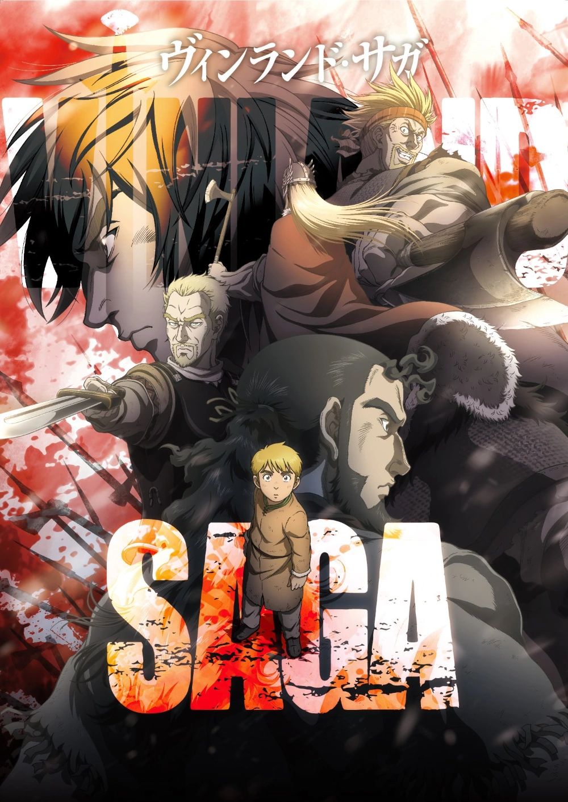

Adaptation
Vinland Saga - Season One
The anime television series Vinland Saga is based on the manga series of the same name written and illustrated by Makoto Yukimura. Twin Engine announced in March 2018 that the manga would receive an anime series adaptation, with the first season being produced by Wit Studio. The series is directed by Shūhei Yabuta, with Hiroshi Seko handling series composition, Takahiko Abiru designing the characters and Yutaka Yamada composing the music.
The first season premiered on July 7, 2019, with the first three episodes airing consecutively, and finished weekly on December 29, of the same year. The series ran for 24 episodes on NHK General TV. Amazon streamed the first season in North America and Australia on their Prime Video service, while Netflix later secured international streaming rights of the series.Due to the pending arrival of Typhoon Faxai on September 8, 2019, Episode 10 was delayed due to broadcasting news, and resumed on the next week.Due to the airing of the World Para Athletics Championship sports tournament on NHK, Episode 18 was delayed and resumed on November 17, of the same year.
Cover
Vinland Saga - Season Two
The second season of the Vinland Saga anime television series is produced by MAPPA. Despite the studio change, the series retained its main production staff from the previous season. The series is directed by Shūhei Yabuta, with Hiroshi Seko handling series composition, Takahiko Abiru designing the characters and Yutaka Yamada composing the music.Taking place a year after the events of the first season, the season primarily focuses on a slave from England named Einar as he meets the protagonist, Thorfinn, while working in a farm.
In July 2021, Twin Engine announced that a second season of the series was in production. Shūhei Yabuta is returning as director, and Takahiko Abiru is returning as character designer. In May 2022, it was announced that MAPPA would be taking over as the production studio for the second season. It premiered on January 10, 2023, on Tokyo MX, BS11, and GBS. The season will run for 24 episodes.The opening theme is "River" by Anonymouz, while the ending theme is "Without Love" by LMYK.
Cover